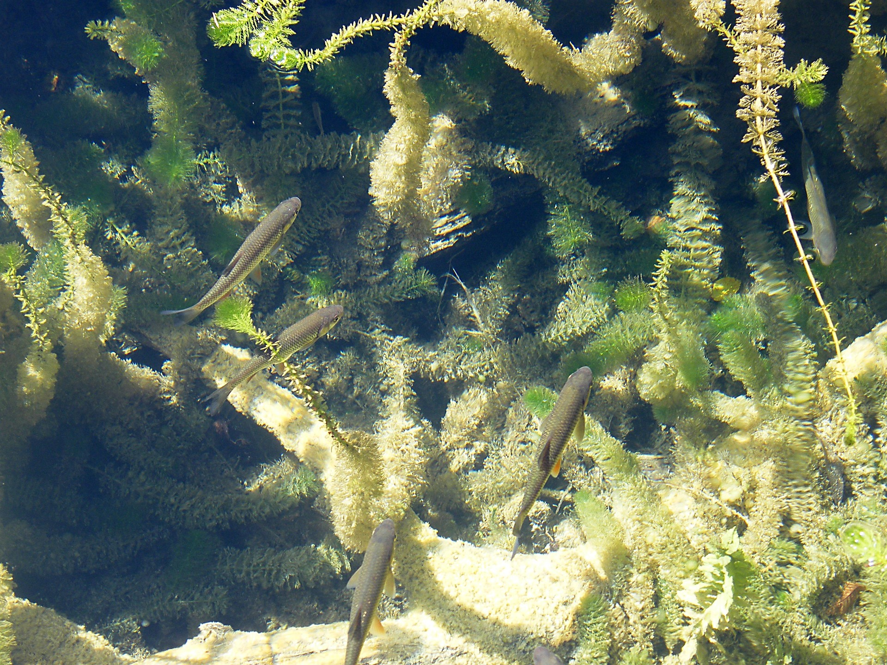

Wasserpest
Die Wasserpest ist eine schnell wachsende und pflegeleichte Wasserpflanze für Süßwasseraquarien.

Wasserpest
- Aussehen: Lange grüne Stängel mit vielen kleinen Blättern.
- Herkunft: Nord- und Südamerika.
- Licht: Die Wasserpest wächst bei schwachem bis starkem Licht.
- Wachstum: Sie wächst schnell und kann regelmäßig zurückgeschnitten werden.
- Wassertemperatur: Etwa 18–26 °C.
- Pflege: Die Pflanze ist anspruchslos und eignet sich auch für Anfänger.
- Vermehrung: Neue Pflanzen können einfach aus abgeschnittenen Trieben gezogen werden.
Geeigneter Standort
Die Wasserpest kann im Hintergrund des Aquariums eingepflanzt werden. Sie bietet kleinen Fischen und Jungtieren gute Versteckmöglichkeiten.
Meine Bewertung
⭐⭐⭐⭐⭐
Zurück zu den Wasserpflanzen
Hier klicken